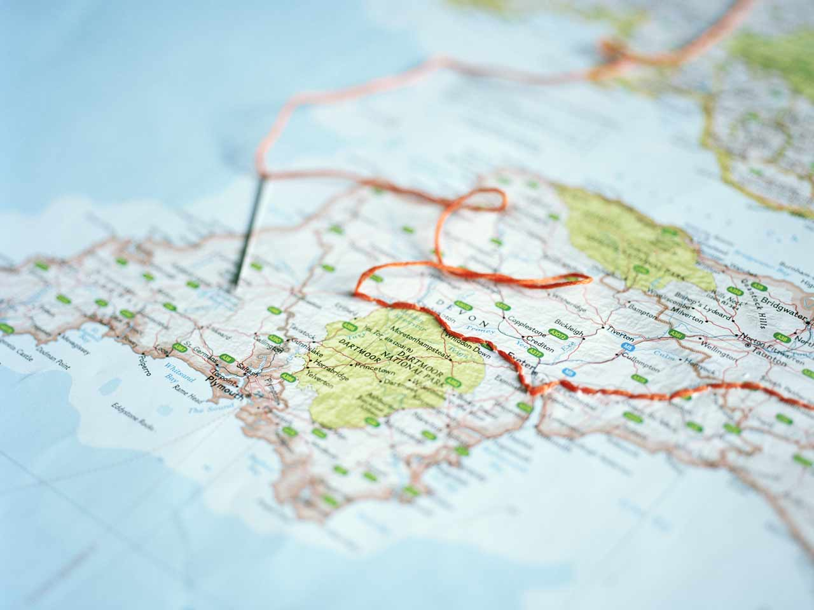

Studieturen er en integreret del af de fleste uddannelser og er et vigtigt fagligt og socialt arrangement for både elever og lærere. I takt med den stigende globalisering er studieturen blevet en vigtigere del af det samlede uddannelsesforløb og kan betragtes som en ’moderne’ dannelsesrejse. Studierejen kan også ses som en sprogrejse, hvor man lærer andre sprog og kulturer at kende.
Der findes en del virksomheder, der tilbyder sprogrejser/studierejser af forskellig varighed med mulighed for at møde kultur og deltage i aktiviteter i de pågældende lande.
I dette TEMA-forløb skal I planlægge en studietur, hvor I opstiller et budget for rejsen og løbende holder styr på jeres udgifter undervejs.
Gode destinationer for folkeskoler
Planlægningen af en studietur i folkeskolen er vigtig. For mange elever er det den første udenlandsrejse med skolen, og for nogen elever er det måske den første udenlandsrejse i deres liv. De af os der har været på en studietur med folkeskolen, husker den uden tvivl endnu. Højst sandsynligt med et stort smil.
I folkeskolen er studierejsens formål ikke kun det faglige, men også det sociale har en rigtig stor betydning for turen.
KilRoy kan bl.a. vejlede jer om gode hoteller og hostels som er vant til at have folkeskoler indlogeret, og som ligger godt i forhold til transport rundt i byen. Vi kan også vejlede om spændende oplevelser, ture og udflugter med et givende fagligt indhold for folkeskoler.
Her er nogle af de destinationer, som ifølge KilRoy er mest populære for folkeskoleklasser.
En god rejse kræver god planlægning. I skal nu finde jeres ønskede
studierejse, og opstille et budget for rejsens omkostninger.
I kan vælge at bruge regnearket **Budget Studierejsen** (vedhæftet herunder),
eller I kan vælge at fremstille jeres eget. Det er dog et krav, at I opstiller
budgettet i et regneark, og at I benytter jer af regnearkets indbyggede funktioner,
så det bliver et dynamisk redskab, der hjælper dig med at regne evt.
ændringer ud hurtigt og nemt.
Udforsk landet Klassen skal også se og opleve det land, I rejser til. Derfor skal I vælge min. 3 sightseeingtur pr. uge, I opholder jer i landet. I kan vælge at finde priser på turene på rejsebureauets hjemmeside, eller I kan tage udgangspunkt i priserne i tabellerne herunder, hvor priserne er opgivet i euro.
Sightseeingture (priser pr. person)
Pris
Bytur med min. 3 seværdigheder + shopping
ca. €36
Funpark
ca. €36
Klatretur/rapelling
ca. €63
Modeshow
ca. €45
Fodboldkamp
ca. €29
Vandretur med overnatning
ca. €67
Lokalt Muserum
ca. €20
Besøg på lokal skole
ca. €0
2. Arbejd med finansering
En nødvendig del af at gennemføre en rejse, er at finde pengene til at finansiere den. Det kan være nødvendigt at spare penge op i en periode for at få råd til at rejse - både til klassekassen og til private lommepenge.
✏️
Kassen har en klassekasse på kr. 15.000. Forældrene har mulighed for at spare sammen, ved at indbetale 100 kr. pr. måned for hver elev.
Hvor lang tid vil det tage klassen at spare op, hvis klassekassen skal dække rejsens udgifter (ex. lommepenge)?
Opgave 2.2
✏️
Klassejob I ugerne op til, har I mulighed for at tjene penge til klassen, og I kan derfor indtjene flere penge til klassekassen. I har mulighed for at arbejde 5 timer på en weekend ad 2 gange. I har følgende muligheder:
Jobbeskrivelse
Løn
Pakke skuer
500 kr./time (samlet klasse)
Oprydning på Sønæs
20 kr./kg. affald
Sælge landlotterier
11-15 kr. pr. solgt lod
Opgave 2.3
I skal også bruge personlige lommepenge til studieturen.
✏️
Fritidsjob I jeres ferier har I mulighed for at arbejde mere, og kan derfor spare flere penge op til fx lommepenge. I har mulighed for at arbejde 6 timer om ugen i seks uger. I har følgende muligheder:
Jobbeskrivelse
Løn
Avisrute i dagtimerne
712 kr./uge
Flaskedreng 6 timer/uge (kun hverdage i dagtimerne)
55,35 kr./time
Piccolo 6 timer/uge (kun hverdage i dagtimerne)
67,46 kr./time
Lagermedarbejder 6 timer/uge
65,82 kr./time
Hjælpe til i butik 6 timer/uge
55,35 kr./time
Biograf 6 timer/uge
73,36 kr./time
3. Arbejd med lommepenge og valuta
Hver elev får også brug for lommepenge på rejse. Hvor mange penge hver elev har brug for, afhænger selvfølgelig af, hvad de har tænkt sig at bruge penge på, men også om, hvor højt eller lavt prisniveauet er, i det pågældende land I rejser til, i forhold til priserne i Danmark.
Opgave 3.1
✏️
Hvad skal du bruge pengene på? I skal i jeres regneark skrive, hvilke ting I regner med at skulle bruge lommepenge på. Det kunne for eksempel være:
Shopping
Entre, biografbilletter
Mad, is, sodavand, slik
Diverse
Opgave 3.2
✏️
Pris på måltider Under studieturen skal I betale for mad.
I skal selv betale for 3 måltider i de dage I er afsted.
4. Tur/retur

Denne del af opgaven skal I beskrive rejsen med data!